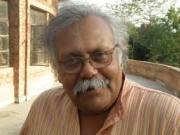

ನಾಟಕಕಾರ, ಕವಿ ಎಚ್.ಎಸ್. ಶಿವಪ್ರಕಾಶ್ ಅವರ `ಮಬ್ಬಿನ ಹಾಗೆ ಕಣಿವೆಯಲ್ಲಿ' ಕವನ ಸಂಕಲನಕ್ಕೆ ಕೇಂದ್ರ ಸಾಹಿತ್ಯ ಅಕಾಡೆಮಿಯ 2012ನೇ ಸಾಲಿನ ಪ್ರಶಸ್ತಿ ದೊರೆತಿದೆ.
ಪ್ರಶಸ್ತಿಯು 1 ಲಕ್ಷ ರೂಪಾಯಿ ನಗದು ಮತ್ತು ಸ್ಮರಣಿಕೆಯನ್ನು ಒಳಗೊಂಡಿದೆ. 2008 ಮತ್ತು 2010ರ ನಡುವೆ ಪ್ರಥಮ ಮುದ್ರಣ ಕಂಡ ಕೃತಿಗಳನ್ನು ಪ್ರಶಸ್ತಿಗೆ ಪರಿಗಣಿಸಲಾಗಿದೆ.
ಎಚ್.ಎಸ್.ಶಿವಪ್ರಕಾಶ್ ಜನಿಸಿದ್ದು ೧೯೫೪ ಜೂನ್ ೧೫ರಂದು ಬೆಂಗಳೂರಿನಲ್ಲಿ. ತಂದೆ ಪ್ರಸಿದ್ಧ ಸಾಹಿತಿಗಳು ಮತ್ತು ಕನ್ನಡ ಸಾಹಿತ್ಯ ಪರಿಷತ್ತಿನ ಅಧ್ಯಕ್ಷರೂ ಆಗಿದ್ದ ಶಿವಮೂರ್ತಿ ಶಾಸ್ತ್ರೀಗಳು.ಅತ್ತಿಗೆ ಮಾಜಿ ಕನ್ನಡ ಸಚಿವೆ ಲೀಲಾದೇವಿ ಪ್ರಸಾದ್. ಎಚ್.ಎನ್.ಶಿವಪ್ರಕಾಶ್ ಇವರು ಹೊಸದಿಲ್ಲಿಯಲ್ಲಿ ನೆಹರೂ ವಿಶ್ವವಿದ್ಯಾಲಯದಲ್ಲಿ ಪ್ರಾಧ್ಯಾಪಕರಾಗಿದ್ದಾರೆ. ಇದಕ್ಕೂ ಮೊದಲು ಕೇಂದ್ರ ಸಾಹಿತ್ಯ ಅಕಾಡೆಮಿಯ ಇಂಡಿಯನ್ ಲಿಟರೇಚರ್ ನಿಯತಕಾಲಿಕೆಯ ಸಂಪಾದಕರಾಗಿದ್ದರು.ವಿವಾದಿತ ನಾಟಕ ಮಹಾಚೈತ್ರ ರಚನೆಯಿಂದಾಗಿ ಸಾರ್ವಜನಿಕರಿಂದ ವಿರೋಧ ಎದುರಿಸಿದರು.
ಇವರ ಪ್ರಕಟಿತ ಕವನಸಂಕಲನಗಳು ಕೆಳಗಿನಂತಿವೆ:
ನಾಟಕ: ಮಹಾಚೈತ್ರ, ಸುಲ್ತಾನ್ ಟಿಪ್ಪು, ಮಂಟೇಸ್ವಾಮಿ, ಮಾದರಿ ಮಾದಯ್ಯ
ಕವನ ಸಂಕಲನ: ಮಿಲರೇಪ, ಮಳೆ ಬಿದ್ದ ನೆಲದಲ್ಲಿ, ಅಣುಕ್ಷಣ ಚರಿತೆ, ಮತ್ತೆ ಮತ್ತೆ, ಸೂರ್ಯಜಲ, ಮಳೆಯೇ ಮಂಟಪ
ಅನುವಾದ: ಕಿಂಗ ಲಿಯರ್
ಸಂಪಾದನೆ: ಕವಿತೆಗಳು ೧೯೮೪
ಅಮೆರಿಕನ್ನಡ
Amerikannada
ಅಮೆರಿಕನ್ನಡ